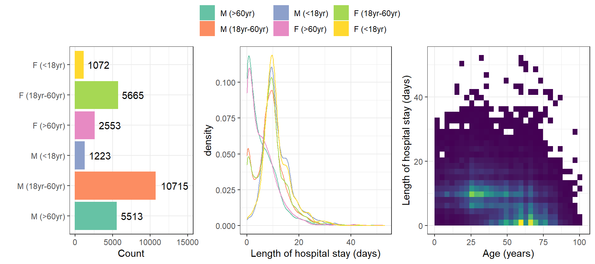

Welcome
visR - A package for Effective Visualizations in Pharma
This tutorial will introduce you to the basic usage of visR, an R
package for effective visual communication. The package presents an
easy-to-use interface for visualizations relevant to the clinical
development process, implementing several best practices. It was
developed as part of the openpharma
initiative, an effort for open-source cross-industry collaboration.
Further reading
- The graphical principles that
visRaims to implement [graphicsprinciples.github.io] - visR Documentation [openpharma.github.io/visR]
- visR @ GitHub [github.com/openpharma/visR]
- visR @ CRAN [cran.r-project.org/web/packages/visR]
- openpharma overview [openpharma.github.io]
Package architecture
The visR package
implements a simple-to-use interface by adhering to consistent naming
conventions.
Overview

In principle, extimate_XXX functions allow to estimate
statistical models from the data (e.g. estimate_KM
estimates a survival model), get_XXX functions get all
kinds of summary statistics (e.g. get_tableone or
get_pvalue), render and visr
display plots and tables, and add_XXX functions add
specific information to a plot or table (e.g. add_CI adds
confidence intervals to a plot.)
Outline
This tutorial will walk you through a basic survival analysis
show-casing some principles and features of visR.
- We will start off by introducing a data set provided by the
COVID-19 India Org Data Operations Groupthat we will use throughout the tutorial. - Then we will introduce a so-called
table 1which gives an overview of the patient population. - We will
estimate_a survival model and introduce functions toget_summary statistics. - We will plot the survival model and show how you can
add_additional information to it. - We will integrate summary statistics into the plots.
The study and the data
Risk and Survival Analysis from COVID Outbreak Data :Lessons from India
The goal of this paper was to assess the mortality in India due to
COVID-19. To understand the survival of COVID-19 patients, a
time-to-event analysis was performed based on Kaplan-Meier estimates
using gender and age group (separately and combined) as strata.
According to the authors (Bankar et al.,
2021), this was probably the biggest retrospective-cohort survival
analysis conducted in India, according to the authors. This paper used
publicly available data COVID-19 India Org Data Operations Group.
The below figure roughly described trends and distributions of the patient population. 
The data
Patients who were admitted to Karnakata, South India, were recruited. The final dataset consists of 26,741 patients. Age and gender of the patient, the number of days in the hospital per stay, the status of the patient (1=censored/alive, 2=dead) and the age category (<18 yr, 18 yr – 60 yr, >60 yr) were collected.
Preparing the data
For the analysis, slight modifications will need to be implemented to
the data. Since visR was
developed with the goal to speed up the clinical development process, it
follows the cdisc ADaM
standards. Additionally, some of the functions are data-type sensitive
and give more informative summaries when the proper data-type is
present.
The following changes are necessary:
As per ADaM guidelines, an event is indicated as
0while censoring is indicated as>0. In the data that we will use,2stands for the event while1stands for censoring. Therefore, the censoring values have to be adjusted.The column
Age_Catwill be parsed as aintegerwhileSexwill becharacter. Converting them tofactorwill result in more informative output. Furthermore,Age_Catis encoded as a numerical value between 1-3. By adding the respective names to these categories, the output will be more readable.
Generation of summary tables
A typical clinical report contains a demography table, detailing the distribution of patients across different arms of the clinical trial. Commonly reported variables are age, sex and baseline disease characteristics. This table is sometimes referred to as Table 1.
visR provides a set of functions to both generate and
render tables. When rendering, visR enforces the
specification of a data source and a title. These functions are
demonstrated demonstrated below. By default, the table is generated for
the whole population but a stratifier can be defined.
# Define meta-data
DATASOURCE = "https://github.com/vntkumar8/covid-survival"
TITLE = "Indian Covid Data"
data %>% tableone(title = TITLE, datasource = DATASOURCE)Exercise 1: Generate the table using
Sex as the stratifier.
Exercise 2: Generate the table using
Sex and Age_Cat as the stratifier.
Exercise 3: Add an additional footnote
to the table.
# Have fun!Note
You will notice that the the above tables will contain
NAs for the stratifier they have been split on. A
workaround for this is to first get the table 1 as a
data.frame, then remove these stratifier, and then render it. This
examples demonstrates the modular built and compatibility of visR. The
tableone command was actually a wrapper around the
functions get_tableone which builds a
data.frame with summary statistics and the
render command which displays it nicely.
data %>%
get_tableone(strata = c("Sex", "Age_Cat")) %>%
filter(variable != "Sex" & variable != "Age_Cat") %>%
render(title = TITLE, datasource = DATASOURCE)(This will be fixed in the upcoming release.)
Fitting survival models
As mentioned, visR has
defaults following the CDISC ADaM standard. If your data set uses these
as well, estimating and plotting survival curves is particularly
straightforward.
# The dataset that comes with visR is cdisc ADaM compliant
mod = visR::adtte %>% estimate_KM()
# When no strata is specified, the overall patient cohort is analysed
mod
mod %>% visr()Survival analysis of the Indian COVID data
Since ADaM standards are not utilized beyond clinical trial analysis
and reporting,, the functions in visR have
parameters allowing for specification of the respective column names
without modifying the actual data.
mod = data %>% estimate_KM(strata = "Sex", CNSR = "Status", AVAL = "Stay")
modOnce the model is estimated, different summary statistics are easy to
get_
mod %>% get_pvalue()Exercise 1: Calculate the quantiles for the model.
# Have fun!Plotting survival models
These survival models can easily be plotted using visR.
The visR function
provides several convenient functions to adjust the aesthetics of the
plot.
mod %>%
visr(legend_position = "top",
x_label = "")
mod %>%
visr(legend_position = "top",
x_units = "years")
mod %>%
visr(legend_position = "top",
fun = "log")Exercise 1: Change the stratifier in the survival
model to Age_Cat.
Exercise 2: Plot the new model.
# Have fun!Improving survival plots
On top this, visR provides
several functions to further improve plots. It is, for example, easy to
add confidence intervals or censoring markers.
Exercise 1: Add markers for censoring. (Hint:
functions adding statistics to a plot in visR usually
start with add_).
# Have fun!Also, a function is provided to further annotate the plot with additional information.
mod %>%
visr() %>%
visR::add_annotation(label = "Hello world", xmin = 0, ymin = 0.5)Exercise 1: Add information about statistical
significance tests to a survival plot. (Hint: Combine
add_annotation() and get_pvalue()).
# Have fun!Styling
Particular attention was paid to stay compatible with the
ggplot2 ecosystem. Therefore, the created objects can for
example be styled like any other ggplot.
gg = mod %>% visr()
gg + ggplot2::theme_dark()Exercise 1: Try to recreate the Figure 5 of the Indian Covid data publication as close as possible using what you learned until now. Alternatively, you can create a more visually pleasing variant.

# Have fun!Combining plots with summary statistics
Another good practice is to provide summary statistics that accompany
the survival plot. For this purpose, visR provides
a handy function that can be appended to the normal piping
framework.
NOTE: This breaks compatibility with the
ggplot2 functions. Therefore, styling has to happen before
adding the risktable.
mod %>%
visr() %>%
add_risktable(statlist = c("n.risk", "n.event", "n.censor"))Analogous to the functions creating and showing a Table 1, risktables
can also be generated independently (using a get_ function)
and can then be rendered.
Exercise 1: Create and render a risktable from the survival model
# Have fun!Advanced usage
Here we demonstrate some advanced options that might be useful for some cases.
Attrition
Often only subgroups of the population are analysed and complete data
sets need to be filtered according to specific criteria. The function
get_attrition allows to list filter statements
explanations, which can be visualized as a table (with
render) or be plotted (with visr). The
function apply_attrition then filters a
data.frame.
data$Patient = 1:nrow(data)
condition = "Age_Cat != '<18yr'"
filters = data %>% get_attrition(subject_column_name = "Patient",
criteria_descriptions = "18 and older",
criteria_conditions = condition)
filters %>% visr()
filters %>% render(title = "Attrition Table", datasource = DATASOURCE)
data %>% apply_attrition(condition)Custom summary functions for the Table 1
The tableone function accepts custom functions to be run on the columns. For this purpose, the different possible data-type have to be considered. For simplicity, only the behaviour for the numeric columns will be changed in the example below.
# This is basically the default function but doesn't return the missing values.
my_func = function(x) {
if (is.numeric(x)) {
dat = list(
`Mean (SD)` = paste0(format(mean(x, na.rm = TRUE), digits = 3),
" (",
format(sd(x, na.rm = TRUE), digits = 3),
")"),
`Median (IQR)` = paste0(format(median(x, na.rm = TRUE), digits = 3),
" (",
format(quantile(x, probs=0.25, na.rm = TRUE), digits = 3),
"-",
format(quantile(x, probs=0.75, na.rm = TRUE), digits = 3),
")"),
`Min-max` = paste0(format(min(x, na.rm = TRUE), digits = 3),
"-", format(max(x, na.rm = TRUE), digits = 3))
)
list(dat)
} else {
visR::summarize_short(x)
}
}
data %>%
get_tableone(strata = c("Sex", "Age_Cat"), summary_function = my_func) %>%
filter(variable != "Sex" & variable != "Age_Cat") %>%
render(title = TITLE, datasource = DATASOURCE)Different rendering engines for table output
As default, the tables will be rendered with gt.
However, other options like for example kable or
dt are also implemented.
mod %>%
get_pvalue() %>%
render(title = TITLE,
datasource = DATASOURCE,
engine = "kable") # dt launches a child process which crashes on shinyapps.io? Possible solution to the exercise for recreating figure 5
m = data %>% estimate_KM(strata = c("Sex", "Age_Cat"),
CNSR = "Status",
AVAL = "Stay")
half_surv_df = m %>%
get_quantile(probs = 0.5) %>%
dplyr::filter(quantity == "quantile") %>%
dplyr::mutate(pos1 = `50`, pos2 = 0.5) %>%
dplyr::select(-c(quantity, `50`))
half_surv_df_horizontal = half_surv_df %>% dplyr::mutate(pos1 = 0)
half_surv_df_vertical = half_surv_df %>% dplyr::mutate(pos2 = 0)
half_surv_df = rbind(half_surv_df, half_surv_df_horizontal, half_surv_df_vertical)
m %>%
visr() %>%
add_CI() %>%
add_CNSR() +
ggplot2::geom_line(data = half_surv_df, ggplot2::aes(pos1, pos2, group = strata), linetype = "dashed")